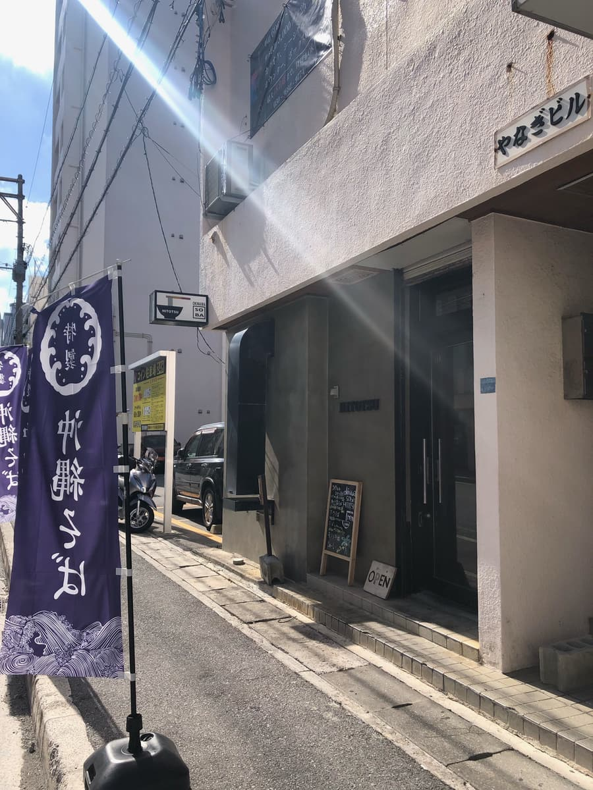
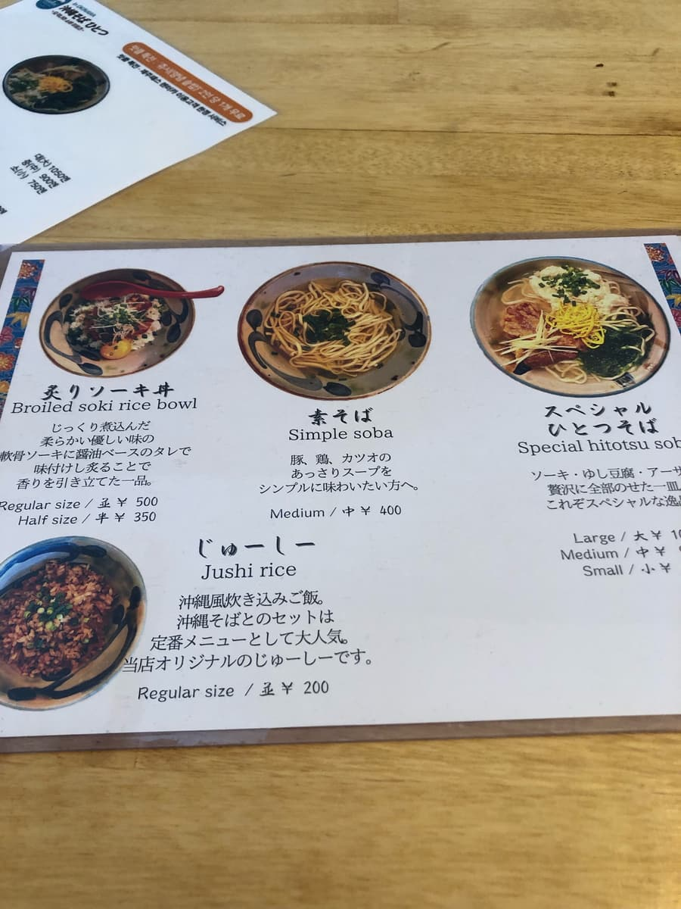
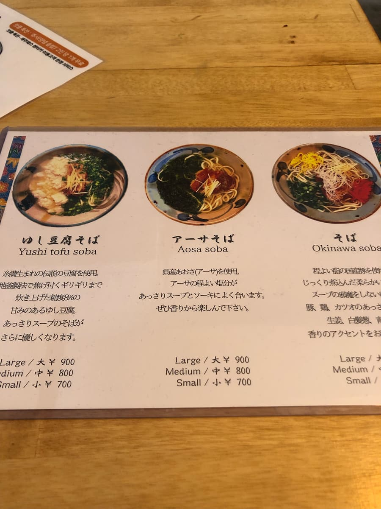
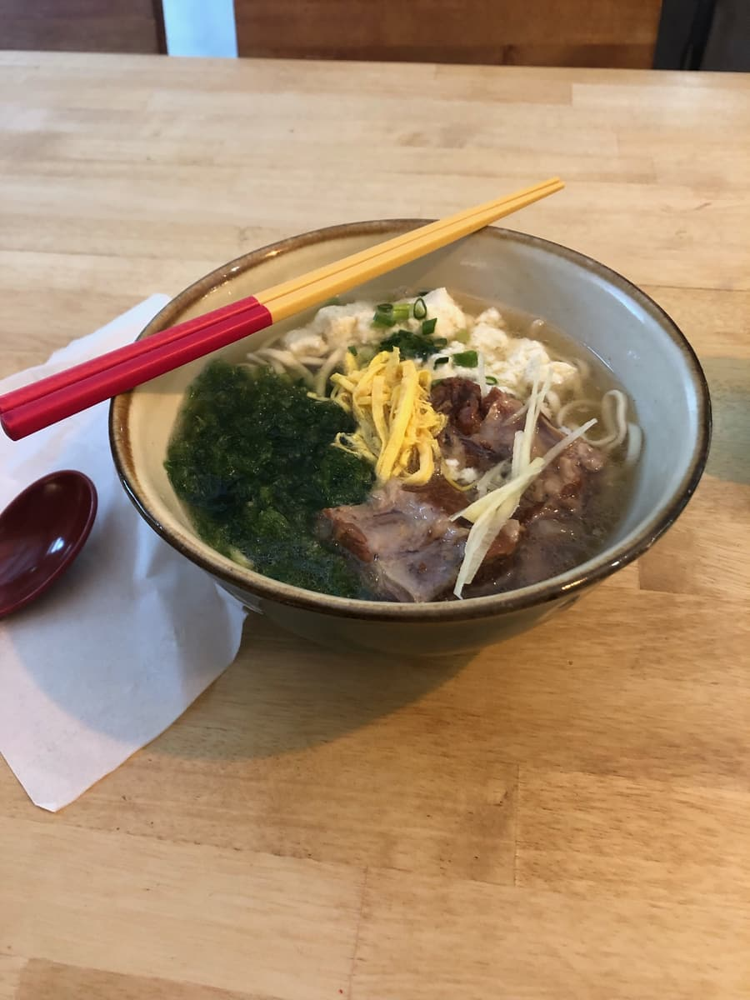
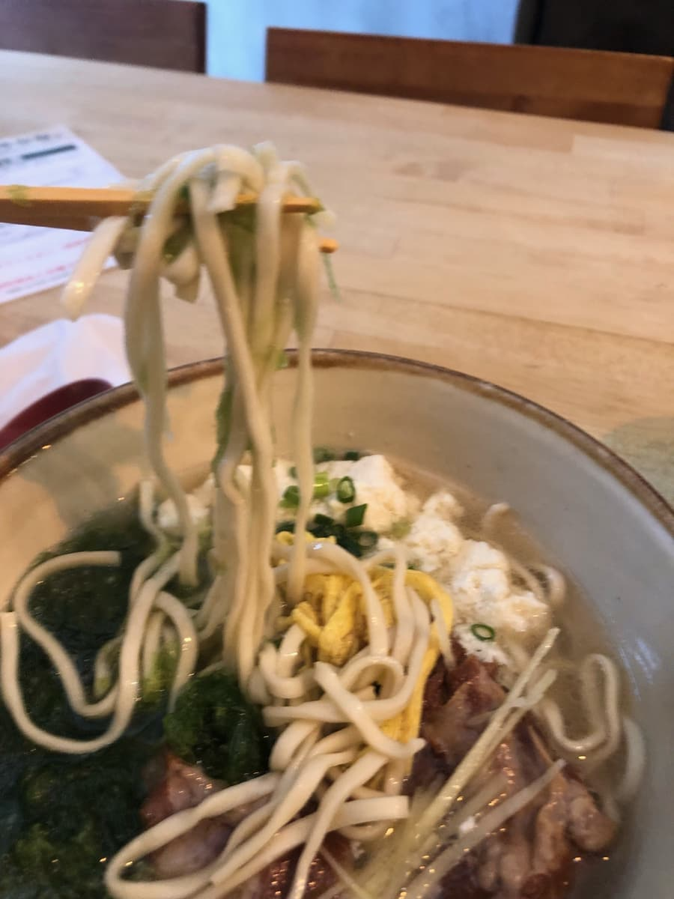

I ate here in October 2023. This shop was a participant in the "13th Okinawa Soba Stamp Rally (2023.10.1–2024.2.29)", and I went as my 7th of 34 shops 😊

There were other customers, so I couldn't take photos inside, but the exposed-concrete building had a stylish feel, somehow like a bar 😁
For my order, I decided on the "Special Hitotsu Soba" introduced in the stamp rally booklet 😊



The "Special Hitotsu Soba" came lol First, the broth of course lol After tasting the broth a few times with my spoon, I thought that within the blended stock of chicken, pork, bonito and so on, the pork bone was subtly winning out a little?
However, when I researched the shop after finishing eating, they had an Instagram, and on that Instagram it was described as "○Bonito broth on the other side of ○○ the chicken and pork soup○✨A soak-into-you style Okinawa soba✨" (;^ω^)
Maybe it's my dumb tongue, but I didn't feel the bonito was particularly strong. However, since the "Special Hitotsu Soba" has "yushi-dofu (soft Okinawan tofu)" as a topping, I also thought maybe its liquid combines with the broth so you get this kind of taste (;^ω^) Sorry, I'm just guessing lol
Next I had the noodles 🙏 The noodles are a thin straight type, with a soft feel.

When I ate the sea lettuce (āsa) topping ("āsa" is what Okinawans call the seaweed "hitoegusa". It clings to rocks in the shallows along Okinawa's coast, and it's apparently in season and delicious from February to May. It's rich in dietary fiber, minerals and calcium, and especially packed with beta-carotene, so it seems to be effective for anti-aging and cancer prevention too. It apparently has about 8 times the calcium of milk and about 2 times the folic acid of spinach (according to info from Nakamura Soba)) tangled with the thin straight noodles, I could taste the aroma and flavor of the āsa 🤗
The soft-bone pork ribs (nankotsu soki) were jiggly and tender, well soaked in flavor and delicious 😁
Rating (9/15): Plain tasty. The inside of the shop has a stylish atmosphere like a bar.
*The shop has no parking lot, so you'll have to park at a coin parking lot nearby.
Noodles: ★★★☆☆（3）
Soup: ★★★☆☆（3）
Toppings: ★★★☆☆（3）